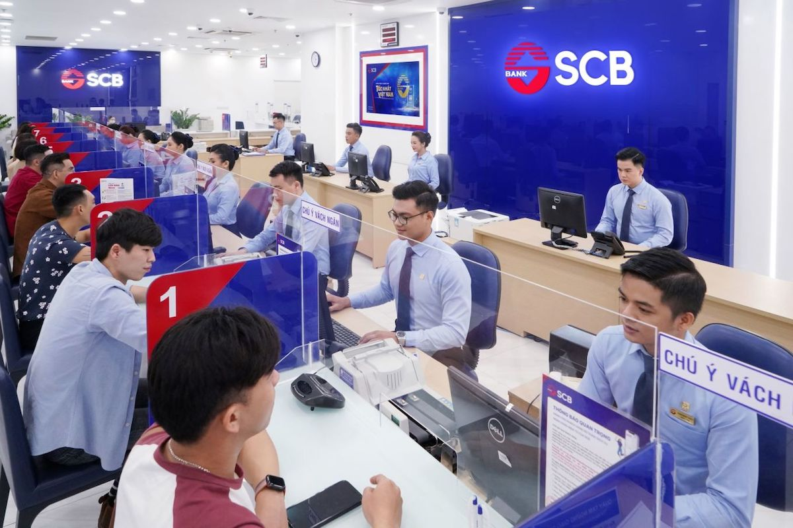

"Ngân hàng Nhà nước đang nghiên cứu đề nghị tham gia cơ cấu lại SCB của một số nhà đầu tư để sớm trình Chính phủ phương án cơ cấu lại ngân hàng này theo quy định", báo cáo nêu.

Hiện 5 ngân hàng được kiểm soát đặc biệt, gồm CBBank, OceanBank, GPBank, DongABank và SCB. Kiểm soát đặc biệt là biện pháp nghiệp vụ nhằm kiểm soát chặt chẽ, hạn chế tác động tiêu cực đến ngân hàng và hệ thống tổ chức tín dụng nói chung. Trong lịch sử ngành ngân hàng, đã có nhiều nhà băng từng bị rơi vào trường hợp kiểm soát đặc biệt nhưng sau đó đã phục hồi và phát triển mạnh.
SCB là ngân hàng được đưa vào diện kiểm soát đặc biệt từ tháng 10/2022, sau khi nhiều chi nhánh, phòng giao dịch của nhà băng ghi nhận tình trạng người dân tới rút tiền đồng loạt.
Nhiệt độ hiện tại của Hà Nội là 18oC theo cơ chế log1020